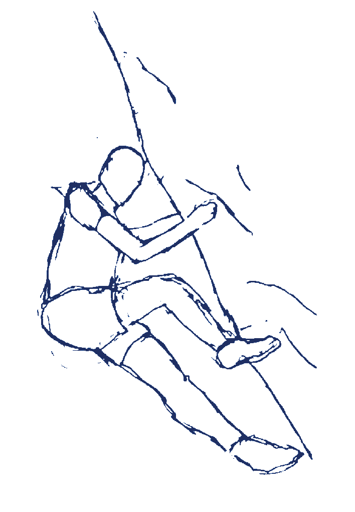

One of my friends, Oliver, has regular appointments at the dentist. Once a week, actually, on Tuesdays.
I would be hanging out with him and his roommates when he’d dip out early, around 8pm, to go to this dentist. Confused as to what business anyone has
at the dentist so often and so late in the evening, I finally asked how bad his teeth really were. It was then I learned that this so-called dentist was
actually a secret DIY rock climbing gym that he goes to on Tuesdays, the only day it is open. I had been curious about this ever elusive climbing wall
for many months, and recently got up the courage to ask Oliver if I could tag along.
After getting off the G, I walk through Clinton Hill’s brownstone lined streets. I’ve never really been here- it’s dark and quiet. It’s nice. I meet Oliver,
and as we walk up to one of those mini strip malls with a dentist's office and some retail shops, I realize he wasn’t kidding about his trips to the dentist.
“This is to ring the bell downstairs to let them know someone needs to be let in,”
Oliver says as he presses two live wires together. Small sparks fly.
I wonder if it hurts. Someone comes to let us in, a dog excitedly trailing behind him. We walk through a somewhat eerie dentist's office, chairs and all,
ready for the next day. Oliver explains that the owner of this office made the walls downstairs, opening it up for free (or a suggested donation) only on
Tuesdays for the past thirty years. Through a doorway at the back of the office, a set of stairs opens up, leading down. Rock climbing holds come up the
walls lining the stairs- someone is strapped into some ropes, though the belay wall itself is pretty short. At the bottom of this albeit small flight of
stairs, the basement rock climbing gym reveals itself. A bucket of old shoes whose ages Oliver says spans from a few months to a few decades lies next
to the stairs.
“You can try to find a pair in there,”
he tells me. Two dogs go running by us and into the main room, where a wall at a steep incline is
the center of attention. Two climbers are cheering for their friend who is hanging horizontally, grasping onto the walls with just the tips of his fingers.
Other people are sitting at the chairs watching, waiting for their turn. Some are sitting and chatting, others are taking a stab at other climbs. The walls
around the perimeter are lined with holds, and I can see people making their way around the room, which is split by the staircase. It’s all marked up, sort
of graffitied, like those shitty bathrooms in the late-night snack restaurants.
“We can put our stuff in here.”
Oliver leads me to a separate room in the back. On one side, people sit and smoke; on the other, milk crates line the wall
and serve as cubbies. I go back to the bucket of shoes and spend at least 10 minutes trying to find a pair. (Note: During these 10 minutes, someone asks me
to lock the door behind me as they leave. I do so successfully. I’m in. I’ve been indoctrinated.) They’re all too small, but I find some that do the trick.
After what Oliver calls a “warm up” and what I call “the most rock climbing my flimsy arms are capable of”, we go to the main wall. While watching a climber
with a body that could serve as a diagram of all the muscles the human body is physically capable of, Oliver explains to me what he’s doing.
“See what he’s doing with his leg? Bending it in like that? That's a drop knee."
As the cilmber continues further upwards, Oliver describes how
that move pushed him further up due to the position of his hips. The climber's friends and others watching shout encouragement and directions to him. I am fascinated by the way these people are all so conscious
of the way their body moves in relation to the space around them. The only sport I’ve ever majorly been involved with is cross country (minus my brief stint
as a basketball player- clad in sports goggles and braces- in middle school),which doesn’t require much in the technique arena. I’ve always felt sort of clumsy
in my body, but it’s clear that these people don’t. They move with purpose and with strength- they know their body and the different functions of each part.

“Alright, I’m gonna do the red striped one,”
Oliver says as he gets up. The different routes are marked with colored tape, barely distinguishable to outsiders.
As he goes through the climb, I am aware of how purposely Oliver moves. He scales the wall almost effortlessly, even when he sort of wedges himself between two
holds. At one point, he hangs from a hold, moving his feet delicately, almost like a dance move, below him as he finds his next point of contact. After his
successful run, I tell him how I found his movements so dancer-like.
“Well that makes sense,”
he says,
“since I was a dance major in high school.”
My envy for bodily understanding increases. I always wished I was able to move my body like that, so freely and comfortably.
We talk about dancing: what Oliver misses about it, why he no longer studies it. He was part of the core group at his high school. He misses the jitters
he would get before first performances (there were usually six for each show). He saw people who went on to study dancing at college struggle. To lose their
lives to it. He wanted something different, so he chose architecture. He’s happy with his decision.
It’s my turn to give it a go, on what Oliver says is the easiest climb there. In my ripped jeans and shoes that are pinching my feet, I approach the
wall. It’s positioned low on the wall with the steep incline, making it hard for me to even get positioned correctly to start. The first group of jacked
climbers watching me, I fail to even get past this first hold. I try again, and fail again. I never said cross country was known for its upper body strength.
But as I try once more, the eyes of one too many people on me, I come to a realization about having my friends teach me things every week. Not only am I
gaining knowledge on new practices and art mediums, but I’m becoming comfortable being bad at things. At failing at things in front of not just strangers,
but people I care about. So I give this climb the old college try, knowing I'll probably drop to the ground once more.